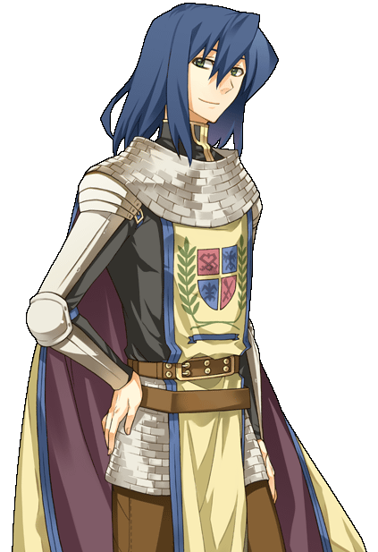
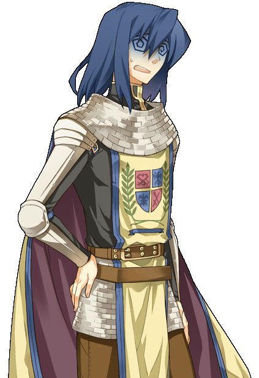
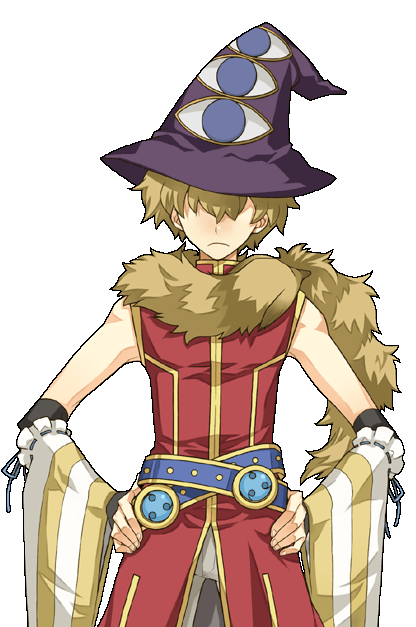

画像にリンクがはってあるものは、クリックすると別窓で大きめサイズが表示されます。
ノア （ゲフェン5時方向） | ノア （ゲフェン5時方向） |
| jpn_noah03.bmp ノア （ゲフェン5時方向） |
|  |  |
ディッシュ （ゲフェン←9時方向） | ディッシュ （ゲフェン←9時方向） |
|  | |
クロム （フィゲルレース会場入り口前） | オズ （フィゲルクロムの横＆ゲフェン←3時方向） |

| |
リンネ （ゲフェン8時方向） | リンネ （ゲフェン8時方向） |
back
(c) Gravity Co., Ltd. & Lee MyoungJin(studio DTDS). All rights reserved.
(c) GungHo Online Entertainment, Inc. All Rights Reserved.
当コンテンツの再利用（再転載・配布など）は、禁止しています。